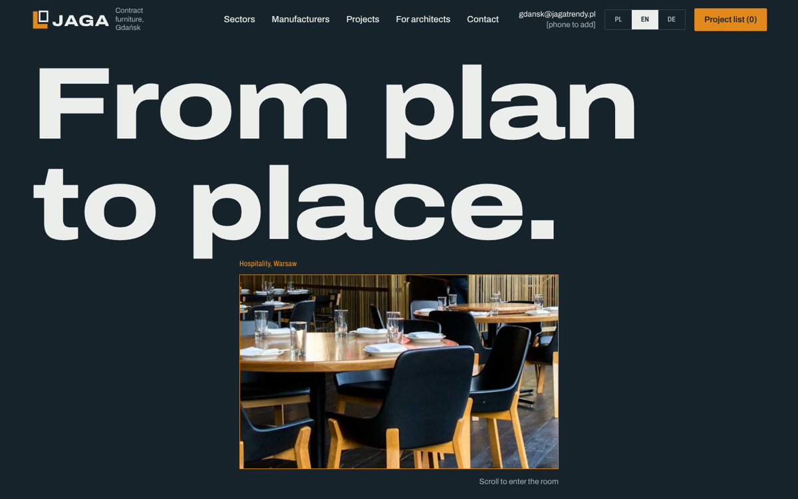
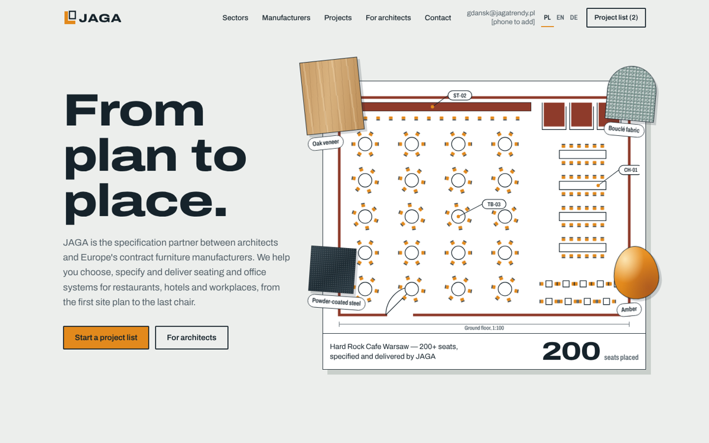

Vom Plan zum Platz.
JAGA ist kein Möbelshop und kein Hersteller. JAGA ist der Spezifikationspartner zwischen Architekten und 13 europäischen Contract-Herstellern. Die neue Website soll genau das zeigen. Diese Seite fasst Analyse, Wettbewerbsvergleich und das neue Erscheinungsbild zusammen und verlinkt die drei Entwürfe.
Was JAGA heute macht
Geschäft
B2B-Einrichter für Gewerbeflächen aus Gdańsk (JAGA Trendy Sp. z o.o.). Beratung bei Herstellerwahl und Ausschreibung, Muster, CAD-Daten, Lieferung bis zur Abnahme. Nur für Gewerbekunden.
Hersteller
Pedrali, Magis, Plust, Thonet, Infiniti (Café/Restaurant), Paged, TON (Holzstühle), Alias, Softline (Sofas), Wilkhahn, Profim, Bejot (Bürostühle), LAS (Bürosysteme).
Referenzen und Märkte
Hard Rock Cafe Warschau (200+ Sitzplätze), Premium-Büro Berlin (120+ Arbeitsplätze), Boutique-Hotel Krakau (80+ Möbel). Märkte PL, DE, international; Sprachen PL, EN, DE.
Was an der aktuellen Seite gut ist
- Klare B2B-Abgrenzung und eine eigene Ansprache für Architekten
- Dreisprachig mit sauberer URL-Struktur, schnelles Astro-Setup
- Starke Herstellerliste als Kapital
Was die neue Seite lösen muss
- Die Hersteller-Logos sind KI-generiert und fehlerhaft (z. B. „FUNRN HLURE“ bei Infiniti, ein Stuhlfoto als Thonet-Logo). Das ist ein Marken- und Vertrauensrisiko. Offizielle Logos über die Händler-Pressekits der Hersteller anfordern. In den Mockups stehen die Namen deshalb als Schrift.
- Impressum enthält Platzhalter (Warszawa, Nullnummern) und widerspricht der Kontaktseite (Gdańsk)
- Generische Stockfotos, doppelt verwendet; keine Bilder realisierter Projekte
- Vier konkurrierende Akzentfarben, keine eigene Schrift, Logo nur 112 px breit
- Aussagen wie „verified partners" oder „24 h" ohne Beleg; keine Telefonnummer
- Deutsche Texte fest in der EN- und PL-Startseite
Wettbewerb: 14 Seiten geprüft, 11 auswertbar
Alle Seiten wurden am 20.11.2026 live aufgerufen, per Screenshot erfasst und ausgewertet. lino.cz, mesmetric.com und utilitydesign.co.uk blockierten den automatischen Zugriff (Cloudflare) und fehlen deshalb in der Bewertung.
| Anbieter | Modell | Stärke | Schwäche | Idee für JAGA |
|---|---|---|---|---|
| .mddPolen, mdd.eu | Hersteller, Office und Contract | Bester Hero im Feld: ein Satz, ein Button, großes Raumfoto. „For Architects" und „B2B" im Hauptmenü | Nur eine Marke, Preisanzeige verwässert B2B | Projektgalerie mit Nennung von Architekt und Fotograf |
| Nowy StylPolen, nowystyl.com | Großhersteller, 70+ Länder | Navigation nach Räumen (Hotel, Restaurant, Office), Wissensbereich, Partner Zone für Architekten | Hero zeigt nur eine Messe-Kampagne, Menü versteckt im Burger | Einstieg „nach Raum", nicht nur nach Produkt |
| 9designPolen, 9design.pl | Händler und Showroom Warschau | Ausgebautes Architektenangebot: Servicebüro, 3D-Modelle, empfohlene Architekten, 3D-Rundgang | Retail-Optik, Rabatt-Pop-up, Darstellungsfehler | „Biuro Obsługi Architekta" als eigener Service |
| AlaxTschechien, alax.cz | Händler mit Contract-Sparte, führt Pedrali und Bejot | Segmente (Hotels, Office, Healthcare), PROFIZONE-Login, Telefon sichtbar | Marktplatz-Dichte, 12,8 px Grundschrift, Sprachmix | Geschützter Profi-Bereich mit Downloads |
| smowDeutschland, smow.de | Design-Händler, 17 Stores, B2B-Sparte „smow works" | Lieferzeit auf jeder Karte, Beratung buchbar, Trusted-Shops-Bewertung | Konsumenten-lastig, B2B im Footer versteckt | Lieferzeit ab Werk und Musterverfügbarkeit zeigen |
| architareDeutschland, architare.de | Premiumhändler mit Office-Planung | Service-Navigation (Office-Planung, New Work Lab), Einzeiler pro Marke | Visuell nicht bewertbar (CSS lud nicht) | Ein Satz Haltung zu jedem Hersteller |
| De ProjectinrichterNiederlande | Markenunabhängiger Projekteinrichter, 250+ Marken | Angebotsliste statt Warenkorb, Phasenmodell, Zertifikate, Kreislauf-Story | Template-Optik, Schreibschrift passt nicht zur Grundschrift | „Projektliste": sammeln über alle Marken, eine Anfrage |
| Contract Furniture StoreUK | Spezialist für europäische Contract-Möbel | Einstieg nach Branche, „Send us your specification", Kundenlogos | Generischer Shopify-Look, SEO-Fülltexte | Branchen-Einstieg direkt unter dem Hero |
| Living EdgeAustralien | Händler (u. a. Herman Miller) | Startseite trennt sofort „Home" und „Professional" | Inhalt hinter der Weiche, schwacher Kontrast | Dauerhafter Einstieg „Für Architekten" im Header |
| Space FurnitureAustralien | Importeur italienischer Marken, Showrooms | Services getrennt nach Trade, Commercial, Architectural; Journal mit Projekten | Startseite führt mit 50 % Rabatt | Klare Service-Taxonomie |
| StylecraftAustralien | Importeur und Contract-Spezialist seit 1953 | Sektor-Kacheln, Projekte mit Kundennamen, Showroom pro Stadt | Outlet-Sale im Hero, kein klarer Haupt-Button | Referenzen immer mit Ort, Sektor und Umfang |
Vor- und Nachteile im Markt
Was die Besten richtig machen
- Profis werden sofort abgeholt: „Für Architekten" steht im Hauptmenü
- Einstieg nach Branche oder Raum statt nach Produktkategorie
- Referenzen mit Ort, Architekt und Umfang als wichtigster Vertrauensbeweis
- Ruhige, fotogeführte Gestaltung mit einer Akzentfarbe und einer Groteskschrift
Wo fast alle schwach sind
- Rabatte und Sales im Hero beschädigen das Premium-Versprechen
- Shop-Warenkorb statt Anfrageliste, obwohl Projekte per Angebot laufen
- B2B-Leistungen im Footer oder Burger-Menü versteckt
- Austauschbare Optik: weiß, schwarz, ein Gelb oder Orange
Lücke, die JAGA besetzen kann
- Keine der geprüften Seiten zeigt CAD/BIM-Downloads und Musterservice prominent
- Niemand denkt in der Sprache der Architekten: Positionsnummern, Möbellisten, Ausschreibung
- Herstellerübergreifende Projektliste mit einer Anfrage gibt es nur in den Niederlanden
Das neue CI
Positionierung
Der Spezifikationspartner zwischen Architekten und Europas Contract-Herstellern. Wir spezifizieren, bemustern und liefern, aus einer Hand und über alle Marken.
Claim
Od planu do miejsca. / Vom Plan zum Platz. / From plan to place.
Herkunft als Idee
Gdańsk ist die Welthauptstadt des Bernsteins. Das Bernstein-Orange steckt schon im alten Logo. Dazu kommen die Ostsee als Tinte, der gotische Backstein als Zweitfarbe und Ostsee-Nebel als heller Grund.
Archivo als einzige Schrift. Die Breite trägt die Persönlichkeit: Expanded 800 für Headlines, normal für Fließtext, Condensed 600 für Positionsnummern und Mengen.
Logo
Raumecke aus dem Grundriss in Bernstein plus ein Quadrat als Stuhl in der Ansicht, daneben JAGA in Archivo Expanded. „Trendy" bleibt im Firmennamen, nicht im Zeichen.
Bewegung
Die Scroll-Technik deiner Interior-Seite: eine schlanke Scroll-Schleife, Parallaxe, Linien, die sich zeichnen, Fortschrittslinie im Ablauf, horizontaler Sticky-Streifen. Ohne Bibliothek, mit Reduced-Motion-Fallback.
Nicht verwenden
Rabatte, Großbuchstaben-Labels über jeder Überschrift, Stockfotos von Meetings, unbelegte Zahlen und Versprechen.
Drei Entwürfe, ein CI
Alle drei nutzen dieselbe Marke und dieselben Inhalte. Sie unterscheiden sich in Stimmung und im zentralen Moment. Die Fotos sind Platzhalter von Unsplash, bis eigene Projektfotos vorliegen.

A: Spec
Hell und präzise wie eine gut gesetzte Möbelliste. Im Hero sitzen Spec-Tags direkt auf den Stühlen im Foto. Ein Klick zeigt Typ und Hersteller und legt die Position auf die Projektliste. Beim Scrollen leuchten die Positionen einer Möbelliste im Foto auf.
Entwurf A öffnen
B: Bursztyn
Dunkel und filmisch, Bernstein leuchtet auf Ostsee-Tinte. Das Restaurantfoto startet als kleines Fenster und öffnet sich beim Scrollen auf volle Breite. Branchen und Hersteller stehen als große Typo-Listen mit Bild-Vorschau.
Entwurf B öffnen
C: Plan
Das Zeichenbrett des Architekten und am nächsten an deiner Interior-Seite. Ein Restaurant-Grundriss zeichnet sich, dann erscheinen 200 Stuhlpunkte (Hard Rock Cafe Warschau). Dazu schwebende Materialmuster, Hersteller als Musterkarten im horizontalen Streifen und eine Projektliste als Schublade.
Entwurf C öffnenEmpfehlung und nächste Schritte
Meine Empfehlung ist A (Spec) als Basis, mit dem Grundriss-Moment aus C für die Architektenseite. A verkauft am direktesten, was JAGA von Händlern unterscheidet, und bleibt hell und gut lesbar für Ausschreibungsarbeit.
- Impressum und Kontakt vereinheitlichen (Gdańsk, KRS, NIP, Telefon)
- Eigene Fotos der drei Referenzprojekte beschaffen
- Richtung festlegen und Feinschliff (Logo-Reinzeichnung, Unterseiten)
- Umsetzung im bestehenden Astro-Projekt mit PL/EN/DE und der Projektliste als Lead-Formular in Supabase